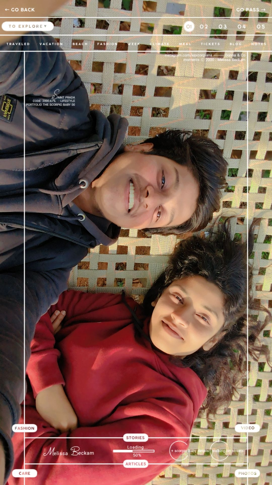
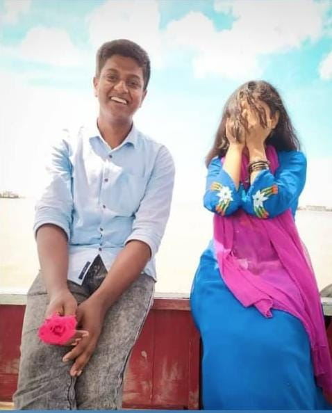

ঘড়িতে ৩.৪৫, আমার দু পা টেবিলের এক কোনায়, মাথা চেয়ারে আর চোখ বাইরের দূর আকাশে, চোখ ছোট হয়ে আসছে, বাহির থেকে আসা শীতল বাতাস যেন মাথায় হাত বুলিয়ে দিচ্ছে, হাত পা যেন নড়ছে না, কিন্তু মন খুব উদাস, প্রতি সেকেন্ড যেন মাইলের পর মাইল পার করছে। প্রতি ক্ষনেই যেন তোমার সাথে দেখা। ওই আকাশ যেন তোমার আর আমার প্রেমের সব হওয়া না হওয়া গল্প আমায় দেখাচ্ছে। আকাশ জুড়ে তোমার হাসি, তোমার ছোটাছুটি, তোমার চোখ, তোমার কান্না, বাতাসের সাথে ভেসে আসা তোমার চুলের গন্ধ, তোমার শরীরের উষ্ণ ভাব, তোমার তাকানো, সবই দেখাচ্ছে আমায়। আর এইসব যে কোন ভাবেই মিথ্যে না তার প্রমাণ যেন, আমার এই আনমনাতে কারে বাধা না দেওয়া, নিস্তব্ধ হল, মানব শুন্য হল, অন্ধকার রুম। ইচ্ছে করে না যে ভাবি এইসব মিথ্যে, মনে হয় যেন প্রকৃতির ইচ্ছে, মনে হয় ভালোই তো লাগছে। তুমি অসক্তি! না, তুমি তো ভালোবাসা, তুমি সাথে থাকলে পরে না পাওয়ার ভয়, তুমি কারো সাথে ভালো থাকার খুশি, তুমি দূর থেকে দেখা সুখ পাখি, তুমি সেই তাসফি যে ঢাকা চলে যাব ভেবে কান্নায় ভেঙে পড়েছিলে ১.৫ মাসের প্রেমে। তুমি কখনই অভ্যাস হতে পার না।
আমি তেমন গুছিয়ে কথা বলতে পারি না, হয়তো পারি, প্রোফেশনাল লাইফে, কিন্তু ভালোবাসার বেলায় না হয়ত। আমি জটিল শব্দ দিয়ে তোমার জন্য ছন্দ, কবিতা বা গল্পও লিখতে পারি না, আমার কেন জানি জটিলতা পছন্দ না, কিন্তু আমি আমার আপন মানুষদের জন্য সব জটিলতায় জড়াতে পারি, সে যাই হোক। আমি জানি তোমার আর আমার এখন কাছাকাছি থাকা, ঘনঘন দেখা করাটা আসলেই ঠিক না, কিন্তু আমি সবসময় চাই যে তোমার কিছুর প্রয়োজন হলে, কিছু চাওয়ার হলে, কিছু বলার হলে, কোথাও না যাওয়ার থাকলে তোমার যেন সবার আগে আমার কথা মনে পড়ে। আমি জানি আমি তোমাকে এমন অনেক কথা বলছি, যগুলো এখন আমি শত সুখ দিয়েও পূরন করতে পারব না। আমার ছোট বেলা থেকেই ইচ্ছে ছিল, যাকে আমি ভালোবাসবো, যে আমার হবে, যে আমার বউ হবে, তাকে আমি অনেক সুখে রাখব, কোন কষ্ট দিব না, অনেক যত্নে রাখব। কিন্তু আসলে তোমারে অজান্তে আমি হয়তো অনেক কষ্ট দিছি। পারিনাই রাখতে আমি।
অনেক অনেক শুভ জন্মদিন তোমাকে। তোমার জন্মদিন আসলেই আমার, তোমার সেই প্রথম জন্মদিনের কথা মনে পড়ে যায়, তোমাকে দেওয়া আমার প্রথম সারপ্রাইজ। আমি অনেক এক্সাইটেড ছিলাম ওইদিন। গোলাপ, কেক, গিফট সবকিছু নিয়ে অনেক ব্যাস্ত ছিলাম। আমি প্রথম থেকেই তোমাকে অনেক খুশি রাখার চেষ্টা করে আসছিলাম। আমি চাই আমি যতদিন বেচে থাকি আমি তোমার প্রতিটা জন্মদিনই যেন এত এক্সাইটেড নিয়ে তোমার জন্য কিছু করতে পারি। তুমি মাঝেই জিগেস কর যে তোমাকে আমার সবথেকে বেশি সুন্দর কোনদিন লাগছিল। তুমি আমি যেইদিন পাঞ্জাবি আর শাড়ি পড়ে র্কাজন হল, সরবর ঘুরছিলাম ওইদিন। আমার প্রায় ই ওই দিনের কথা মনে পড়ে, তোমারে ওইদিন অনেক সুন্দর লাগতেছিল। আমি সবসময় দোয়া করি আমি তোমার প্রতিটা জন্মদিনে তোমার পাশে থাকি, আমি অনেক দিন বাঁচতে চাই। চাই তোমারে অন্তত যেন দূর থেকে হলেও দেখতে পারি। তোমার জন্মদিন উপক্ষে i wish- তুমি অনেক অনেক বছর বাঁচ আর আমিও যেন তোমার প্রতিটা জন্মদিনএ তোমাকে দূর থেকে হলেও দেখতে পারি। তুমি যেন তোমার সকল ইচ্ছে, শখ, পছন্দের সবকিছু পূরণ করতে পার। যাদের থেকে তুমি ভালোবাসা পাও নাই, তাদের থেকে যেন ভালোবাসা পাও, যার যার থেকেই ভালোবাসা চাও তারাই যেন তোমাকে ভালোবাসা দেয়, আমি যা যা ভালোকিছু তোমাকে দিতে পারছি, আর যা যা দিতে পারি নাই সবকিছু যেন তুমি পাও। আল্লাহ যেন তোমার সকল ইচ্ছা সখ পূরণ করে। মাঝে মাঝে ইচ্ছে করে তোমাকে নিয়ে বের হয়ে তোমার সব ইচ্ছা, সখ, যা যা কিনতে মন চায়, যা যা করতে মনচায় সব করি, ইচ্ছে করে আমার সব টাকা পয়সা তোমাকে দিয়ে দেই। যাই হোক আমি চাই তোমার সব পূরণ হক। আমি তো পারি নাই, যে পারে সে করুক, আর যদি আমি পারি আমি যেন করতে পারি। আমি সারা জীবন তোমার জন্য দোয়া করে যাব। সব ভালো কিছু যেন তোমার সাথে হয়..........আমীন।💞 তোমার জন্য এমন গিফট বানাবো ভাবি নাই আসলে এইভাবে আগে, কিন্তু এবার মনে হল এমন কিছু একটা করি। আমি তোমার জন্য এগুলো লিখে রাখতেছি একটু একটু করে, যেন আমাদের সামনে যোগাযোগ হোক বা না হোক, আমি থাকি বা না থাকি যেন আমি প্রতি বছর তোমাকে সারপ্রাইজ দিতে পারি।💞 প্রতিবছর তোমার জন্য একটউ একটু ভালোবাসা রেখে যাব।💞